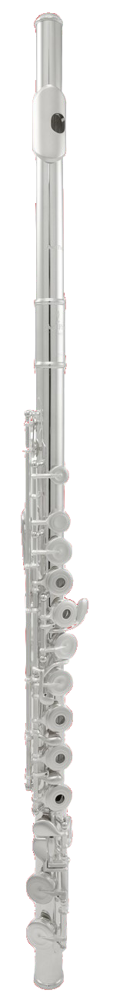
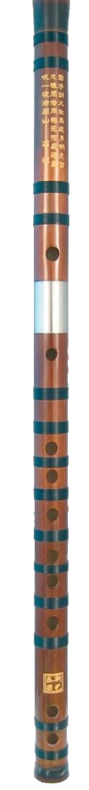

| FOTO | |
 |  | |
|---|---|---|---|---|
| NÁZEV | ZOBCOVÁ FLÉTNA | TRAVERSO | PŘÍČNÁ FLÉTNA | DI-ZI |
| INFO | Tato flétna, či flétny jí podobné jsou známy odpradávna. Jako na jedinou z těchto 4 fléten se na ni hraje podélně. | Tato flétna pochází z období baroka, postupem času se zdokonalila do dnešní podoby. | Dnešní flétna, kterou nejvíce upravil THEOBALD BÖHM roku 1847. Od té doby flétna prošla jen již "nepatrnými" změnami. | Tato příčná flétna je tradiční čínský nástorj. Dodnes je možné se s touto flétnou setkat v tradiční čínské hudbě. |